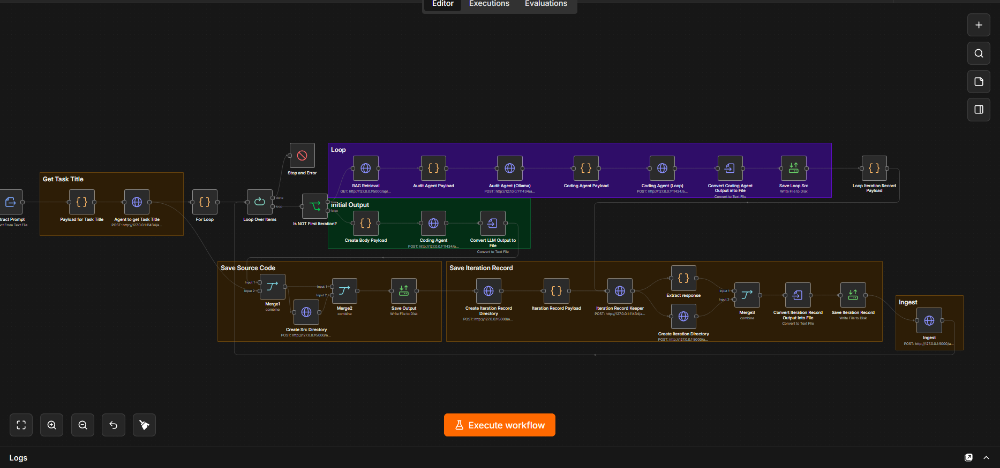

Output Auditor
A self-hosted automated evaluation pipeline constructed using prompt engineering, OpsX, and n8n orchestration. Executes localized Retrieval-Augmented Generation (RAG) leveraging ChromaDB vector store, Flask microservices, and Ollama local models to audit AI generation passes with zero cloud dependency.
